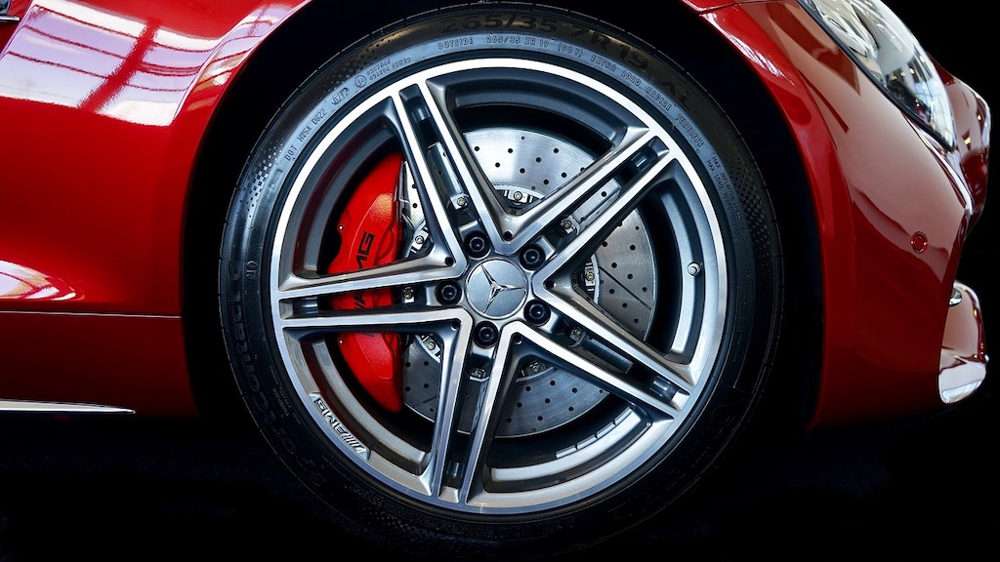

Mercedes steht für Fahrspaß, Lifestyle und Prestige.
Als Besitzer eines Mercedes gilt es als selbstverständlich, für eine regelmäßige Pflege und Wartung zu sorgen.
Dabei stehen auch die Bedienbarkeit und Praktikabilität im Vordergrund.
Um eine lange Lebensdauer zu gewährleisten,
ist der Austausch gängiger Verschleißteile sowie die Anschaffung diverser Zubehörteile für viele Mercedesfahrer selbstverständlich,
um mit dem eigenen Fahrzeug langfristig Spaß zu haben.


Die genannten Produkte beziehen sich nicht ausschließlich auf die Bestellungen privater Fahrzeughalter.
Auch oft gekaufte Produkte von Werkstätten sind in der Aufzählung inbegriffen.
Basis der Recherche waren die Daten von verschiedenen Online-Händler und Marktplätzen.
Es liegen viele Wortspiele auf der Zunge: Launige Lastesel, Feurige Familienautos, Kofferraum-Knallbüchsen,
Kraft-Kombis – sicher fallen Ihnen noch ein paar mehr ein. Doch wie sagte schon George Orwell – "Always avoid alliterations".
Also klemmen wir uns das und werfen einen Blick auf den neuen BMW M3 Touring im Konkurrenzumfeld von Audi und Mercedes-AMG.
Das Genre der sportlichen Kombis haben die Münchener schließlich nicht neu erfunden, auch wenn der M3 Touring mit großem Hallo präsentiert wurde.
Ein erster Datenvergleich dürfte dabei helfen, den Neuling in die bestehende Riege einzusortieren.
Dabei sind neben der Performance eben auch Praktikabilität und Platzangebot spannend.
Nach jedem Kapitel ziehen wir ein kurzes Zwischenfazit.
Mercedes-AMG C 43 T-Modell: Mercedes hat den sportlichesten Ableger (C63) der neuen C-Klasse noch nicht wieder und den zweitsportlichsten ganz neu im Angebot.
Als AMG C 43 misst das T-Modell 4,79 Meter Länge, 1,82 Meter Breite und 1,47 Meter Höhe – und fällt damit schmaler und höher als die Kontrahenten aus.
Das serienmäßig elektrisch öffnende Ladeabteil fasst 490 bis 1.510 Liter,
maximal dürfen 515 Kilo zugeladen werden. Fahrfertig bringt die AMG-C-Klasse 1.810 kg auf die Waage und ist damit das leichteste Auto in diesem Vergleich,
rollt aber aus Termingründen auch mit einem Leistungshandicap an. Wer in der ersten Reihe bequeme Platzverhältnisse wünscht, belässt es bei den serienmäßigen Sportsitzen.
Ist eine eingefasstere Sitzposition gefragt, bietet AMG alternativ Performance-Sitze an.
Mit 2,87 Metern Radstand sitzen Mitfahrer im Fond besonders komfortabel und mit mehr Platz zur Beinauflage als bei Audi oder BMW.